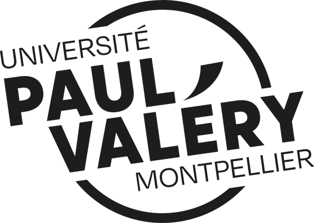

Geographer · natural hazard risk
Ilyas Hammouti
I turn satellite data into modelled catastrophe losses. MSc student in natural hazards and risk (Dynarisk, Paris 1 Panthéon-Sorbonne), looking for a six-month nat cat internship in Zurich from 11 January 2027.
Scroll to follow my path on the map Swipe to follow my path on the map

2022 – 2023 · Université Paul-Valéry, Montpellier
From urban planning to physical geography
I enrolled in Geography & Planning for the planning side. Physical geography and cartography hooked me instead, and that changed everything that followed.
2023 – 2024 · Université Paris Nanterre, second year
First GIS, first YouTube channel
Nanterre is where I learned GIS. In March 2024 I started a geography YouTube channel to teach what I was learning.
2023 – 2024 · Lac du Salagou, Hérault
Water management and irrigation
A field project on water management and irrigation around the Salagou reservoir: a short documentary and an interview with a local farmer.
Jun – Aug 2024 · Geofit, Le Crès (Montpellier)
Cartographer
Interpreted Pléiades Neo very-high-resolution satellite imagery, digitised building footprints from orthophotos in MicroStation, and quality-checked the team's mapping data.
National defence context, so no outputs shown.
2024 – 2025 · Université Paris 1 Panthéon-SorbonneSorbonne
Bachelor's degree, Environment track
GIS, spatial analysis, territorial diagnostics and fieldwork, plus environmental impact assessment. Graduated with honors (14.5/20).
Feb – Jun 2025 · Universitas Gadjah Mada, Indonesia
Exchange semester in physical geography
Taught entirely in English, in a region exposed to volcanic and seismic hazards (18.6/20). Two thematic videos from the semester: urban transport, and natural hazards.
Sept 2025 · Université Paris 1 Panthéon-SorbonneSorbonne
Entering the Dynarisk Master's
MSc Environmental Dynamics and Risks: geomorphology, hydrology, climatology and natural hazard analysis, with GIS and remote sensing applied to hazard mapping. That year I also produced remote sensing tutorials for my classmates.
“On his own initiative, he produced video tutorials to help his classmates better understand some of the tools and methods covered during the course.”Alex de Sá, IGN
Oct 2025 – Jul 2026 · Sorbonne Junior Conseil, Paris
Project manager, student consultancy
The student consultancy of Paris 1, based at the Sorbonne. I prospected Paris-region municipalities and real-estate agencies, including an outreach campaign on flood-risk information documents (DICRIM). I wrote technical and commercial proposals, led negotiations, and represented the consultancy at public and corporate networking events.
2025 – 2026 · MSc, year 1 · Mount Dempo, Sumatra
My master's thesis: geomorphology of a volcano
Mapping surface deposits and slope processes from Sentinel-1/2 imagery and the DEMNAS elevation model. A remote study, with no fieldwork. Supervisors: F. Lavigne, A. Faral, Y. Chabot.
Map layers to come: geomorphological map and megaliths webmap.
Oct 2025 – Sept 2026 · Master's fieldwork
Out in the field
- Jura, Oct 2025. GNSS topographic survey and sediment coring.
- Cévennes, Sept 2026. Wildfire hazard mapping downscaled to municipal level.
- Yerres, Sept 2026. Post-restoration river study.
Since August 2026 · Personal project
Nat cat recap & loss estimation
Hazard × Exposure × Vulnerability = Loss
A catastrophe-loss chain built end to end. Hazard footprints come from Copernicus EMS and Global Flood Monitoring (Sentinel-1/2). Exposure comes from JRC GHSL and LitPop, through CLIMADA (ETH Zurich). Damage comes from EMS grading or published depth-damage curves.
The Emilia-Romagna (2023) and Latvia (2026) floods calibrated the model. The Rasuwa flood (Nepal) is the first estimate published. Since September 2026 a weekly video digest of the week's hazard events goes out every Monday.
Digest example and cyclone track to come.
Modelled estimates. Not loss adjustments or insurance advice.
September 2026 · Letter of recommendation
“Rather than simply completing the required exercises, he contributed his own ideas, explored different analytical approaches, and experimented with alternative methods for processing and visualizing data, notably with Google Earth Engine.”
“I therefore recommend Ilyas without reservation.”
Request the full letterSince March 2026 · Planned launch · Switzerland
Swiss Copilot
A tool to organise my own move to Switzerland: budget estimation and municipality recommendation. Launch planned, B2C first, then B2B.
From 11 January 2027 · Zurich
Next: Zurich
A six-month internship in nat cat, applying geospatial data processing, hazard and exposure mapping and clear reporting. The first step of a career as a geospatial specialist in natural hazard risk.